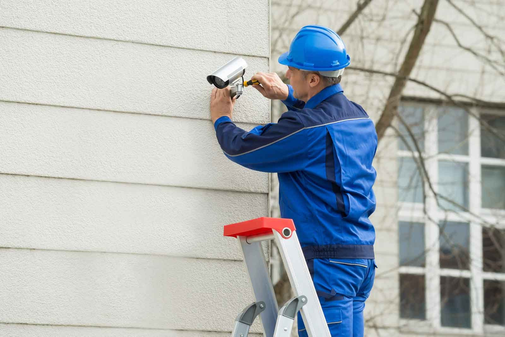
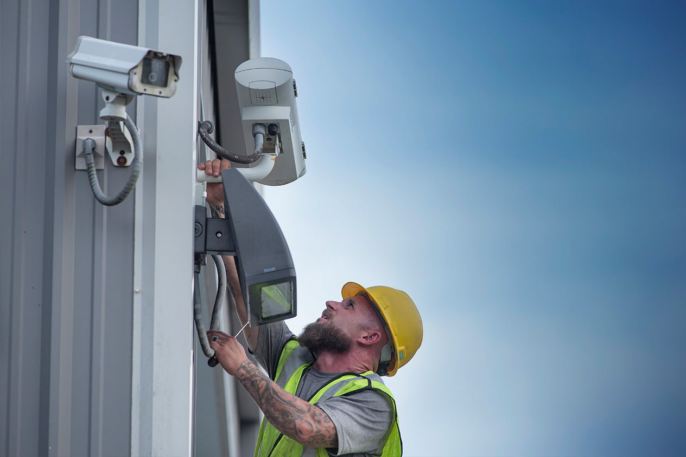
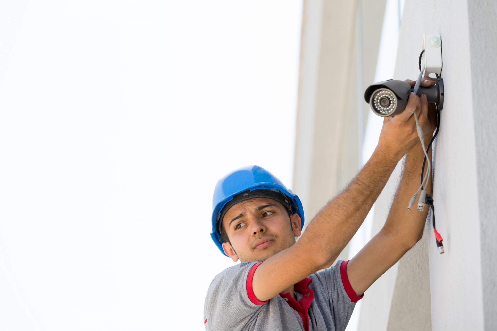
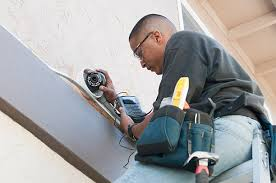
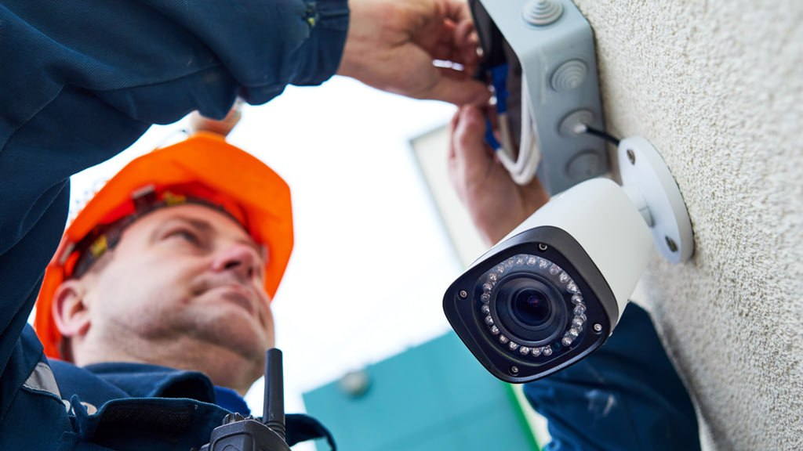
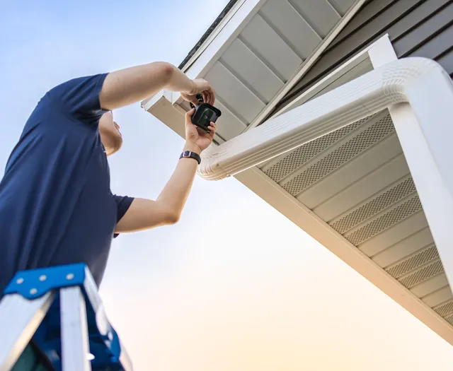
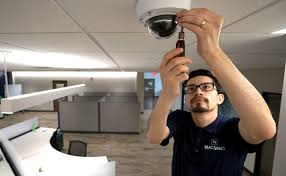

Home
|
Projects and Portfolio
|
Blog
|
Contact Us
|
Privacy Policy
PORTFOLIO AND PROJECTS
Our CCTV Installations & Security Solutions Portfolio
We take pride in delivering top-tier security solutions tailored to meet the unique needs of our clients. From residential to commercial installations, we ensure that every project is designed and executed with precision, offering optimal security and peace of mind.
Explore some of our featured CCTV installation projects below to see how we’ve helped clients enhance their security infrastructure.
Residential Security System – Green Valley Homes
Location: Green Valley, CA
Project Overview:
For this residential neighborhood, we installed a state-of-the-art CCTV system, including night vision cameras and motion detection features. Our team ensured seamless integration with mobile app access, allowing homeowners to monitor their properties remotely 24/7.


Warehouse Monitoring System – Apex Logistics
Location: Los Angeles, CA
Project Overview:
Apex Logistics required a comprehensive surveillance system to monitor its expansive warehouse. We deployed high-definition, wide-angle cameras at key points to cover the entire facility, ensuring round-the-clock security. The system also included thermal cameras to enhance monitoring in low-light conditions.


Retail Store Security – The Corner Market
Location: San Francisco, CA
Project Overview:
To protect The Corner Market from potential theft, we installed a multi-camera system with real-time alerts and remote access. The setup included facial recognition technology and DVR storage, ensuring the business owner can review footage anytime.


Corporate Office Surveillance – Zenith Enterprises
Location: New York, NY
Project Overview:
Zenith Enterprises needed a discreet and efficient surveillance system for its high-traffic corporate office. Our team installed indoor and outdoor IP cameras with real-time monitoring and cloud storage solutions to ensure data security and accessibility.

